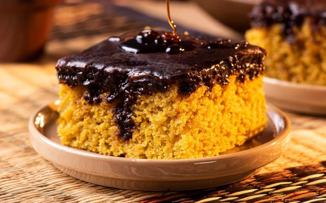

Livro de Receitas Online
Strogonoff de Frango
Bolo de Cenoura
Bolo de Cenoura

Ingredientes
1/2 xícara (chá) de óleo
4 ovos
2 e 1/2 xícaras (chá) de farinha de trigo
3 cenouras médias raladas
2 xícaras (chá) de açúcar
1 colher (sopa) de fermento em pó
Cobertura
1 colher (sopa) de manteiga
1 xícara (chá) de açúcar
3 colheres (sopa) de chocolate em pó
1 xícara (chá) de leite
Utensílios
Batedeira
Forma de bolo
Liquidificador
Prato de sobremesa
Modo de preparo (40min)
Massa
Em um liquidificador, adicione a cenoura, os ovos e o óleo, depois misture.
Acrescente o açúcar e bata novamente por 5 minutos.
Em uma tigela ou na batedeira, adicione a farinha de trigo e depois misture novamente.
Acrescente o fermento e misture lentamente com uma colher.
Asse em um forno preaquecido a 180° C por aproximadamente 40 minutos..
Cobertura
Despeje em uma tigela a manteiga, o chocolate em pó, o açúcar e o leite, depois misture.
Leve a mistura ao fogo e continue misturando até obter uma consistência cremosa, depois despeje a calda por cima do bolo.